Outdoor Living Ideas, and What Each One Cost
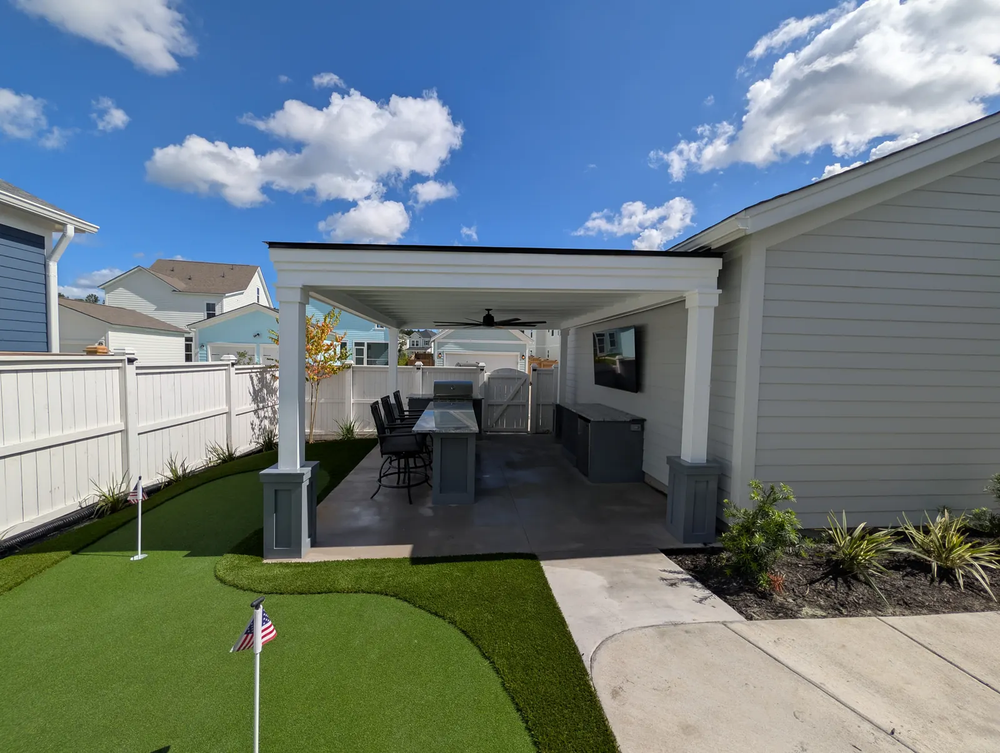
Every One of These Is Ours
Anyone can show you a gallery. What is useful is why each of these was built that way, and what it cost, because the decision behind an idea is the part you actually have to copy. Every one of these is from one of our own projects.
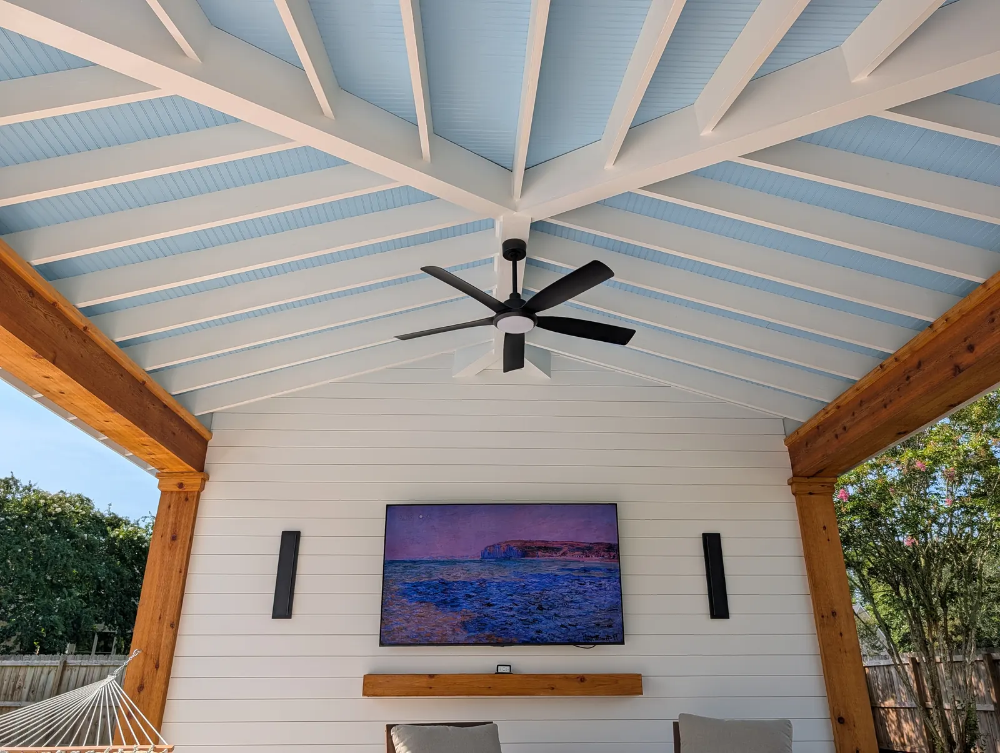
1. Finish the Ceiling, Not Just the Roof
A finished ceiling, with trim and lighting worked into it, is what makes a covered structure read as a room rather than a shelter.
On our West Ashley cabana the ceiling is beadboard painted haint blue, with cedar posts and beams and craftsman trim around them. Tape lighting hidden above the beams washes it at night, which is why the space still works after dark.

2. Let the Structure Be the Feature
On the Mount Pleasant pool pavilion the frame is what you notice. Oversized engineered timbers — $10,000 in materials on their own — let us set the rafters 24 inches apart, which is what gives it the grand, timber-framed feel. Overhead is a beadboard tongue-and-groove ceiling, and the walls and the kitchen are finished in nickel gap. The homeowners said it felt like a high-end resort.
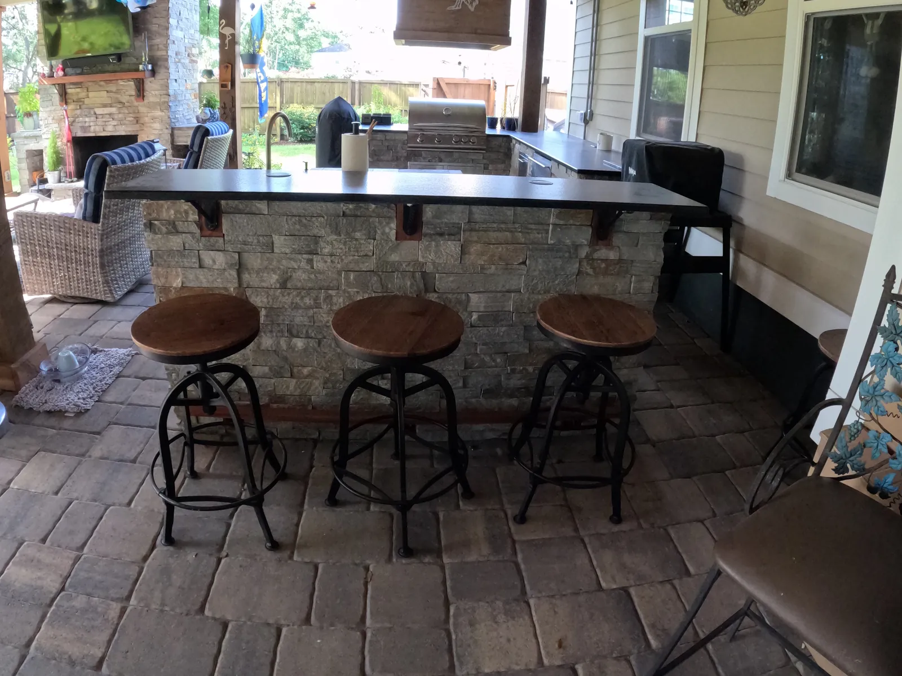
3. A Bar Top With a Foot Rail
A counter you cook at is a work surface; add a bar top and a rail and it becomes somewhere guests stand and talk to whoever is cooking.
On this Summerville kitchen the bar top sits on the stone on brackets, and the foot rail along the base is sapele.
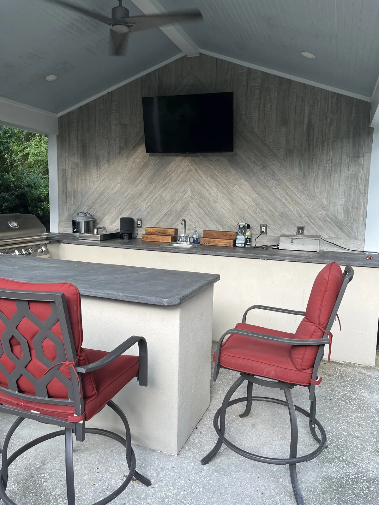
4. Concrete Counters Where There Is a Lot of Counter
This kitchen has a lot of countertop, so the counters are concrete, to keep the cost down across that much surface. The base is finished in acrylic stucco, one of the more affordable finishes, with Hardie trim.
The back wall is tile laid in a pattern you do not often see, with the TV mounted on it. And it still has everything a working kitchen needs: a grill, a burner, a fridge, a sink and cabinets.
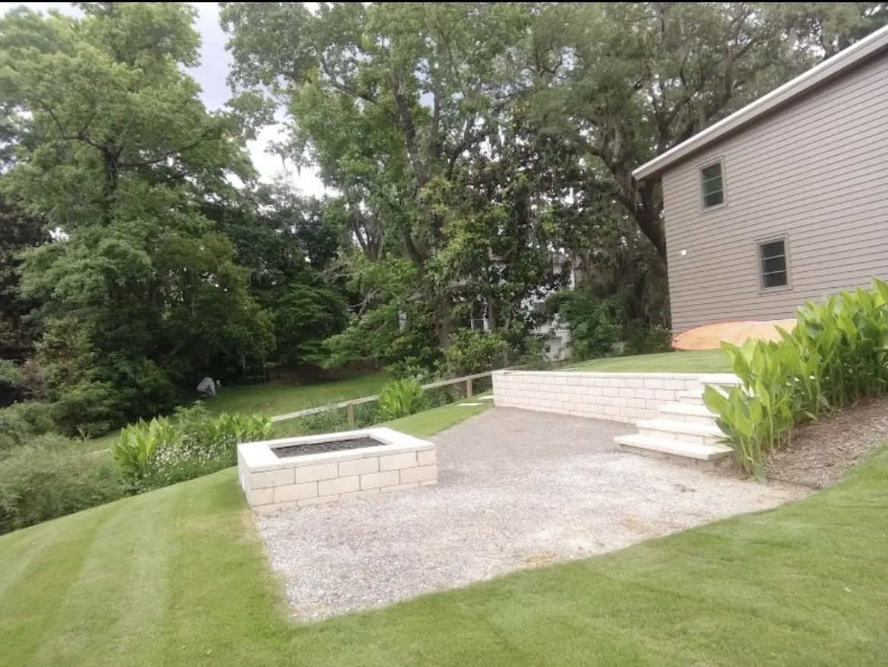
5. A Fire Pit Off the Corner of the Patio
$1,000 for a kit, from $2,500 built custom, and it extends the season by months in a climate where the evenings are the best part of spring and autumn.
Two things decide whether it gets used: put it off the corner rather than in the middle, so it does not cut the patio in half, and give it about six feet of clearance all round so chairs can pull back without leaving the paving.
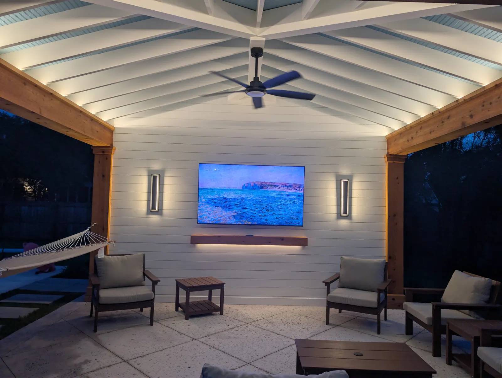
6. Light the Structure, Not Just the Yard
Landscape lighting runs about $200 a light plus a transformer, which makes it the cheapest thing on this page per unit of difference.
The order we would spend it in: paths and steps first, because they are the safety case; then one good tree uplit, which is visible from the street, the porch and from inside the house; then the structure itself — accent lighting on a feature wall, and tape light above the beams.
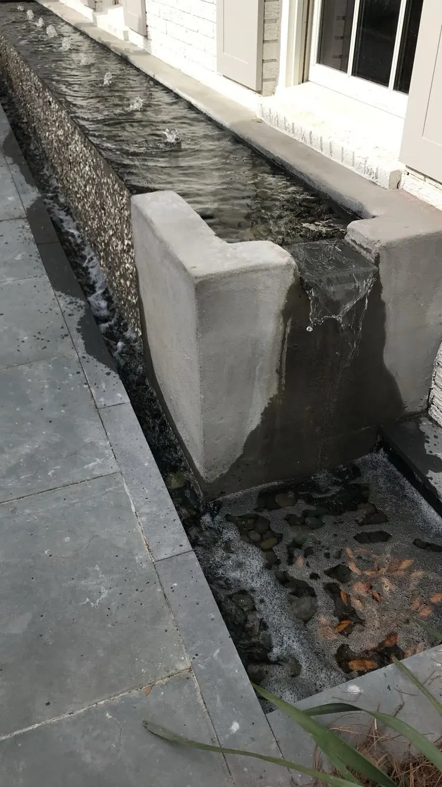
7. Moving Water in a Small Courtyard
From $1,000 for a kit, up to $30,000 for something custom. In a small Charleston courtyard it is often the best money on the whole project, because it covers traffic noise and gives the space a centre when there is no room for anything else.
We build ours in poured concrete rather than CMU block. A block fountain needs a waterproofing membrane, which means more maintenance, and it will leak down the road.
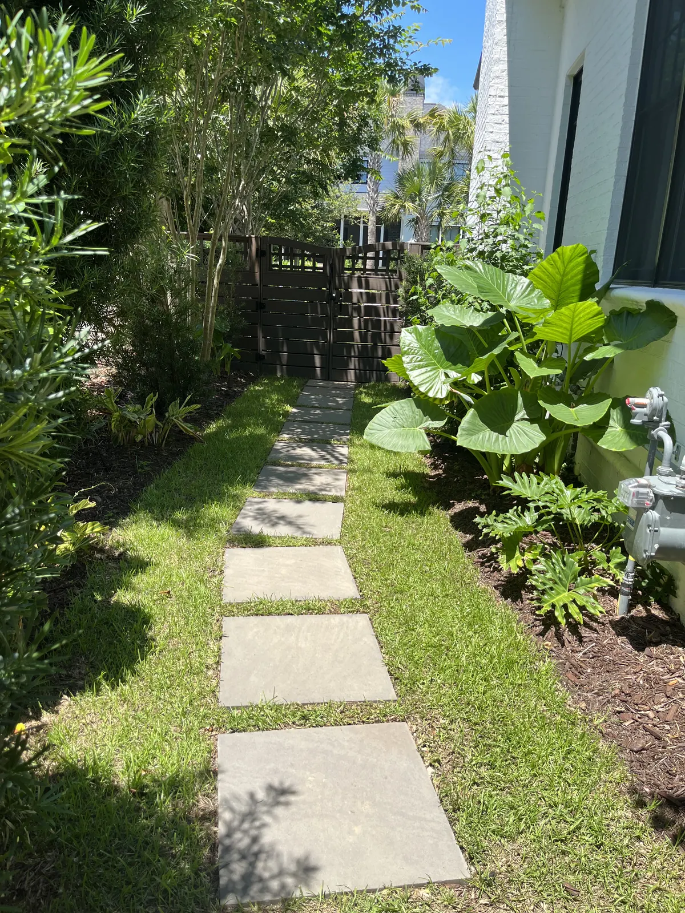
8. Screen With Hedges Before You Build a Taller Fence
The usual instinct about an overlooked yard is a higher fence. Layered evergreen hedging does the same job, reads as landscape rather than as a barrier, and does not need a variance or an HOA argument.
The catch is patience. Buying smaller stock and waiting two seasons is a legitimate way to hit a budget, and part of why we design not to over plant in the first place.
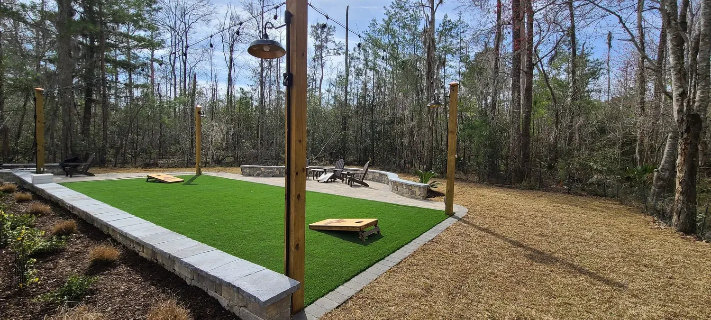
9. Turf Where Grass Keeps Failing
From $13 per square foot including the base preparation. Turf earns its money in the places grass never establishes: deep shade, a dog run, a narrow side yard, or under a structure.
It is also what makes a games area work — a cornhole lane or a putting green stays flat and playable in August, which a Lowcountry lawn will not.
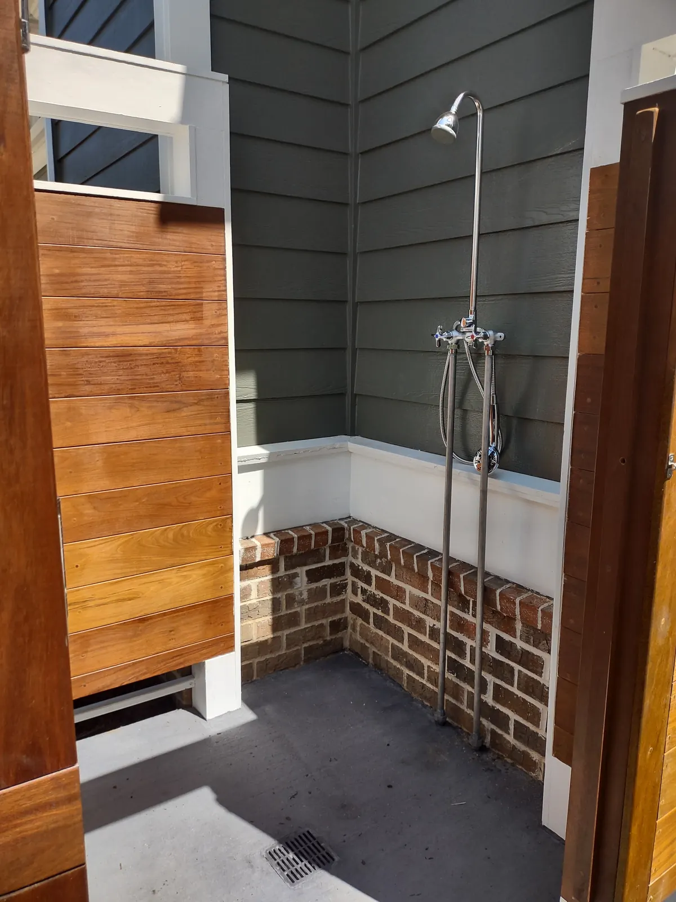
10. An Outdoor Shower, Plumbed Hot and Cold
$6,000 to $15,000, in pressure-treated or sapele. If there is a pool or you are anywhere near the beach, it is the most-used thing we build per dollar.
Plumb it hot and cold rather than cold only. A cold-only shower gets used for about six weeks a year; a hot one gets used after the beach in October.
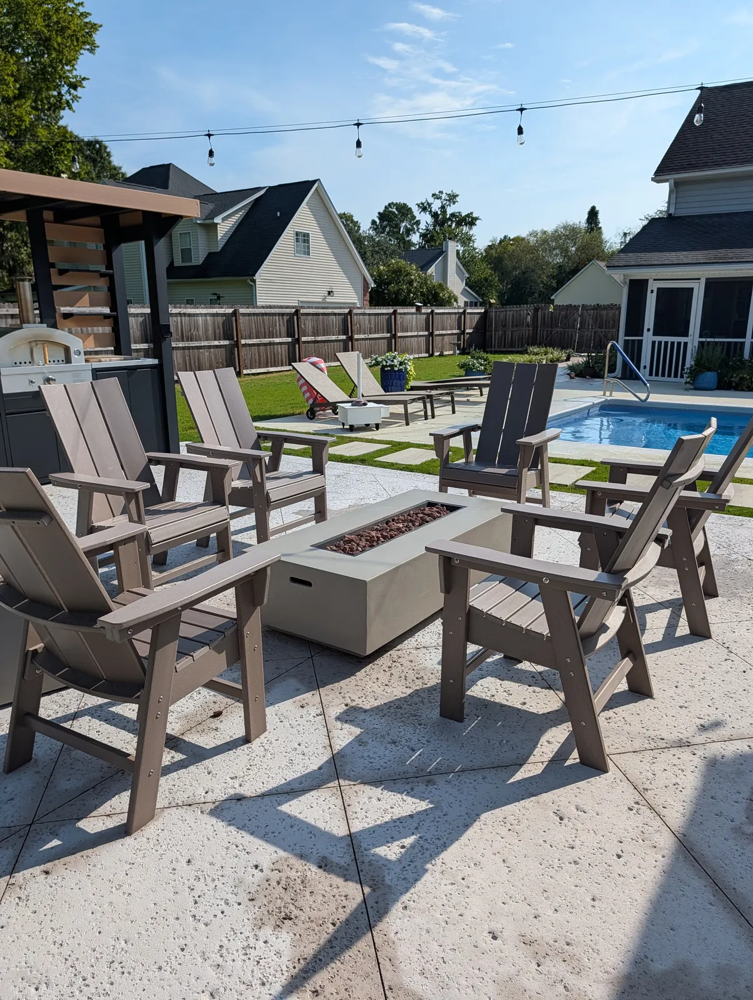
11. Size the Patio for Furniture, Then the Paths Between
Undersized patios are the single most common thing we get called in to correct. Ten by ten is the smallest we would recommend — a table and chairs without it feeling tight — and anything with a fire pit needs more than that from the start.
Patios run from $18 per square foot. Then plan clear routes between the places you cook, sit and swim, with room for people to pass behind a seated chair.
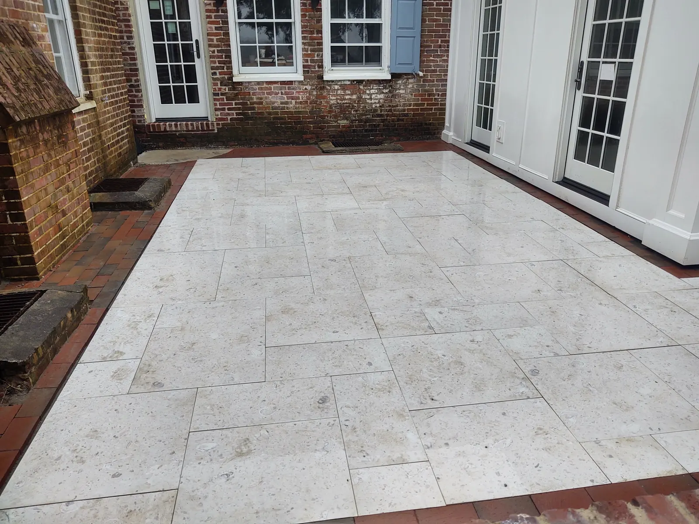
12. Spend the Material Budget Where You Stand
Poured concrete is the most affordable at about $12 a square foot, and salt-void or tabby finishes look good doing it. Natural stone is the premium and the longest lasting.
The Summerville patio here is marble imported from Italy with a brick border, mortar set over a concrete slab, which is what let us get crisp edges and a perfectly flat install. That base is the part that decides whether it still looks like this in ten years.
The Ideas Worth Doing Only If You Want Them
A putting green, a very specific pool layout, a yard built around one hobby: excellent reasons to build, and poor reasons to expect the next owner to pay for it. The Summerville putting green works because that family wanted it.
If resale is on your mind, spend on cover, a properly sized patio, lighting and planting, in that order. And if the budget will not reach everything, run the conduit, gas and water sleeves now — empty sleeves under a new patio cost very little, and cutting one up later costs a great deal.
For what all of this costs together, see outdoor living space costs, and for the order the decisions get made, how to design an outdoor living space.
Frequently Asked Questions
What is the cheapest change that makes the biggest difference?
Lighting, at about $200 a light plus a transformer, and a finished ceiling on whatever structure you already have. A bar top with a rail is the cheapest change to how a space actually gets used.
How big should a patio be?
Ten by ten is the smallest we would recommend, which fits a table and chairs without feeling tight. Anything with a fire pit needs more, because you need about six feet of clearance to pull chairs back. Patios run from $18 per square foot.
What should I do first if I cannot afford all of it?
Drainage and grading, then cover, then the patio. And run conduit, gas and water sleeves before any hardscape goes down: they cost very little on the day and a great deal afterwards.
Which ideas add value and which are just for me?
Cover, a properly sized patio, lighting and planting tend to read well to a buyer. Putting greens and anything built around one hobby are worth building because you want them, not as an investment.
See It Built
Projects where we put this into practice.


Planning a Project of Your Own?
See everything we design and build, or get in touch to talk through your ideas with Doug and Zach.